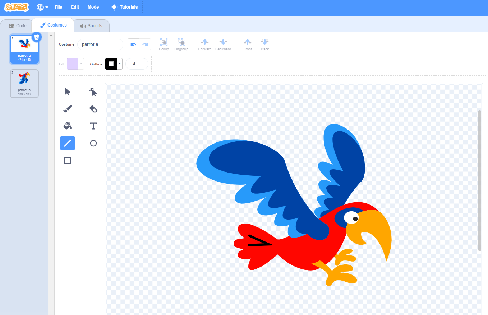
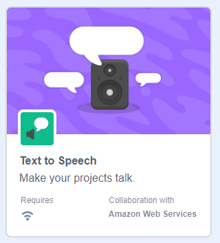
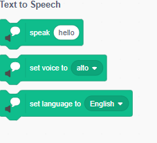
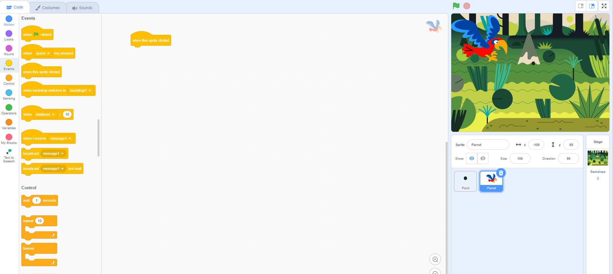
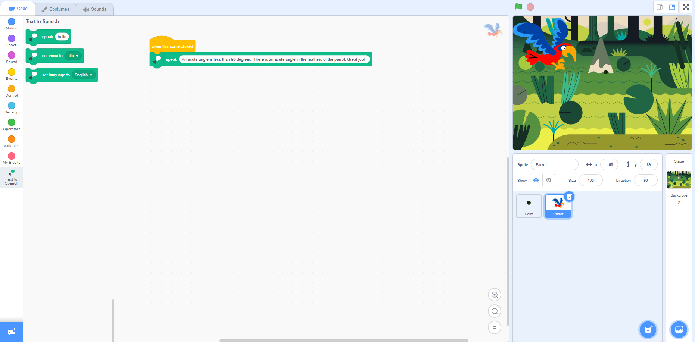
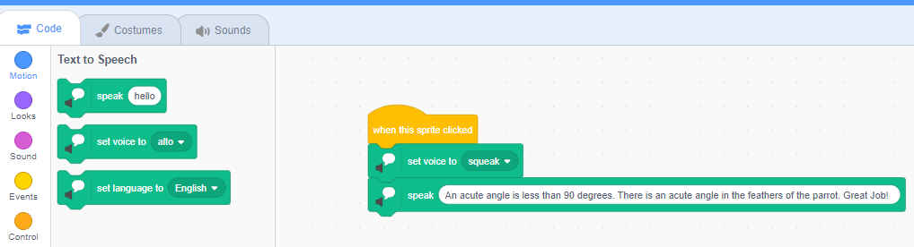
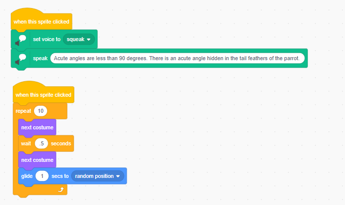
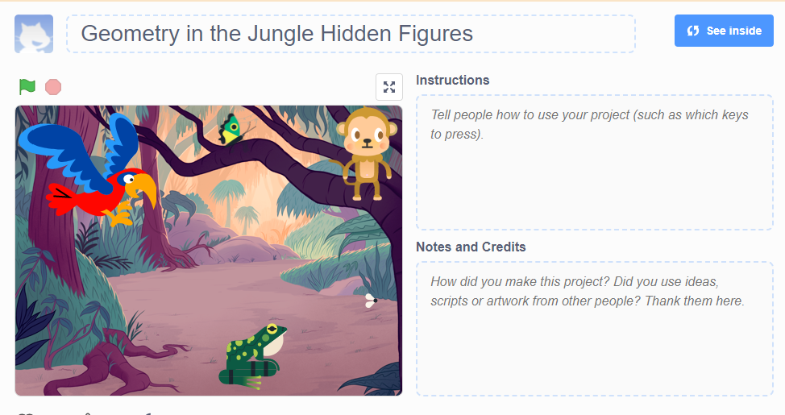

Do It! Scratch: Hiding in Plain Sight
 The Challenge
The Challenge
Your challenge is to create your own hidden pictures animation in Scratch using what you know about geometry. We can find geometrical shapes hidden in the natural world around us. A bird’s beak is an isosceles triangle. The horizon over the water forms a line. There is a line of symmetry in a peacock feather. Just look around and you will see geometry hidden everywhere. Design a scene using different angles, lines, shapes, and figures as Scratch Sprites. The script you create will help you learn how to identify and differentiate different angles, lines and two-dimensional shapes.
Project Steps
-
Create Your Geometry Animation
-
Drawing on a Sprite
-
Learn How to Use the Text to Speech Blocks
- Share Your Geometry Animation
Create Your Geometry Animation
Create a new project in Scratch. If you have an account sign in and your work will be saved automatically. If you do not have an account you can download your work to your computer to save it. Begin by choosing your Sprites or drawing your own characters. You should include the following geometrical figures in your animation: point, line, line segment, ray, parallel lines, perpendicular lines, acute angle, right angle and obtuse angle. Make a plan for which Sprite will hide each geometrical figure. You can either create your own Sprite and conceal the geometrical figure in your drawing or you can draw on an existing Sprite. Either way you should have at least nine Sprites in your animation.
Drawing on a Sprite
Let your inner artist shine! How will you conceal perpendicular lines? Remember you do not want to make it too easy. Think about how you will conceal the hidden figures. You can draw your own Sprites using the Paint Tool or modify Sprites that have already been created. You can resize Sprites and change the direction/ orientation using customizing tools. In the example below an acute angle was added to the tail feathers of the parrot using the line tool.

Add Text to Speech Blocks
You can add the Text to Speech Blocks by adding an extension. Click on the block icon at the bottom left corner of the Scratch program editor. This will open an extension library.
Next, click on the Text to Speech Extension. Adding this block will give you three additional blocks.
|  |  |
Now, it is time to code your hidden objects. You can type your script using the Text to Speech blocks and the program will narrate what your write. You can even change the tone of your speech.
-
1. First select the Sprite you want to code.
2. Click on Events (the yellow dot on the far left-hand side).
3. Drag the first option, “when this sprite clicked”, to the middle box.

-
1. Click on Text to Speech at the bottom of the coding blocks.
2. Drag the first option, “speak” and connect it to the “when this sprite clicked” block.
3. Type what you want the Sprite to say when it is clicked.
4. Test your code.

-
1. Drag the “set voice to” block and place it below the “when sprite clicked” block. You must place it before the “speak” block because the Scratch program completes strings of code in order.
2. Select a tone. There are several choices. You can talk like a giant or in a squeaky voice.
3. Test your code.
4. Continue coding your other Sprites that are in your hidden pictures animation.
5. You can also animate your Sprites to move, spin, or change costumes when they are clicked.


Share Your Geometry Animation
Let your friends see if they can find all the hidden geometrical figures in your animation and give you feedback. To share your geometry animation:
- Click the blue See Project Page button at the top of the screen.
- Click inside the Instructions box to add directions for your animation.
- Add a list of the geometrical figures to look for in the instructions. This will be like a checklist so when other people play your game they know what to look for.
- Click the orange Share button at the top of the screen to let others see your animation.
- Ask your friends for feedback. Was it too easy or too hard? Programmers and video game designers work together and provide feedback to each other in order to make their code more efficient.
